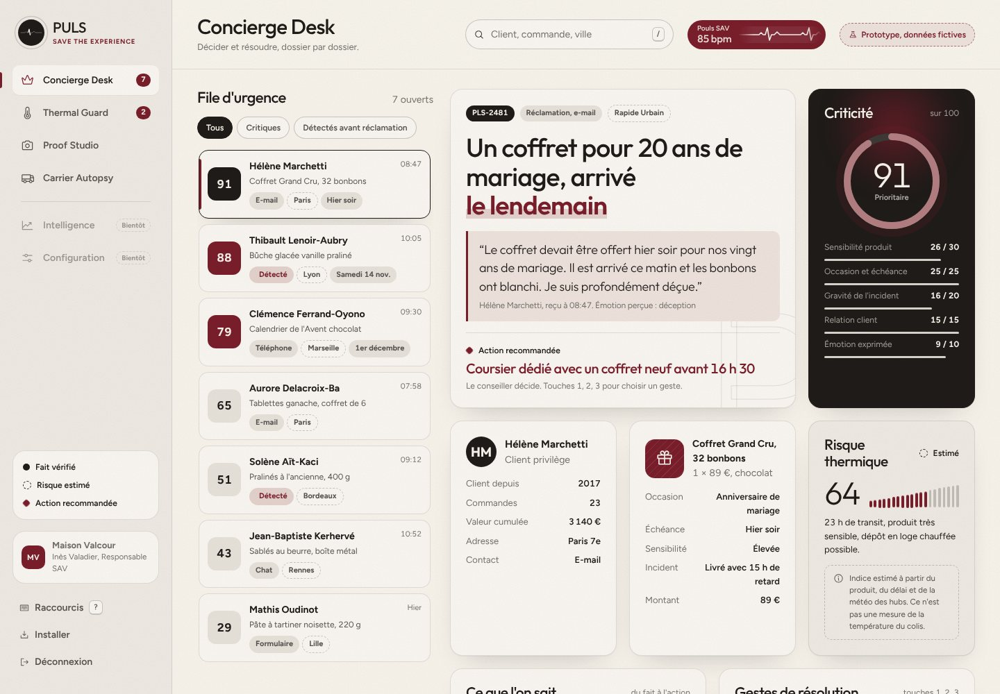
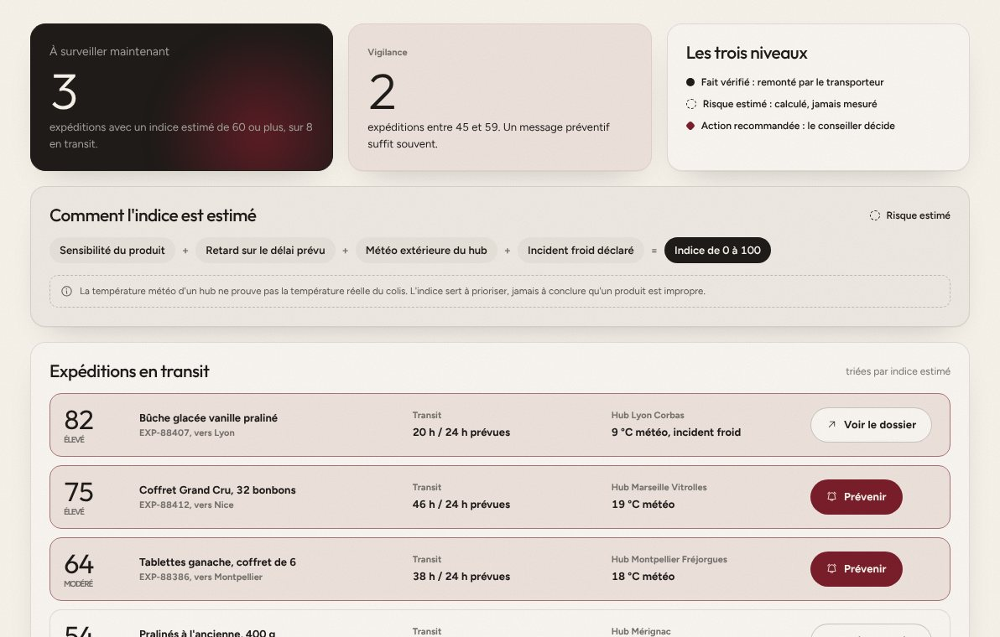
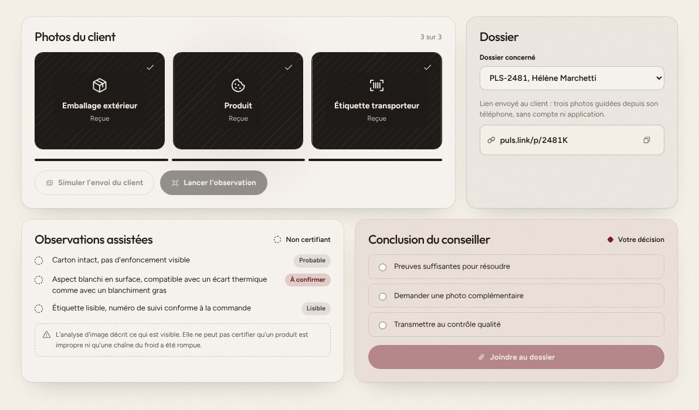
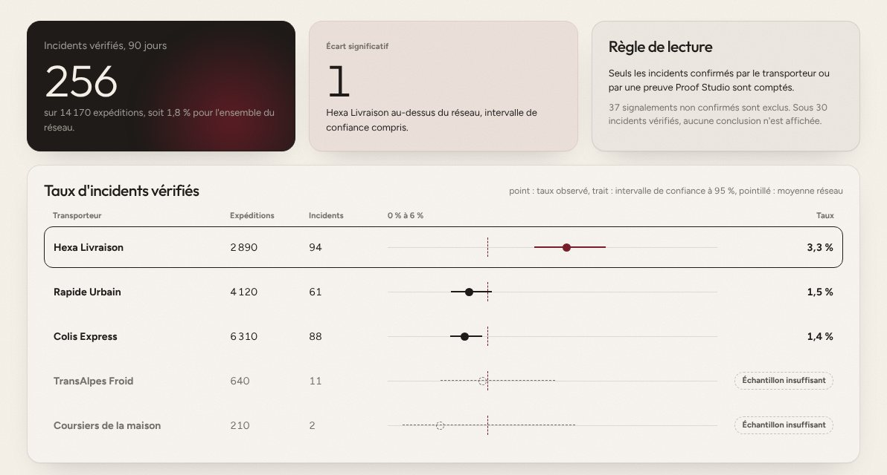
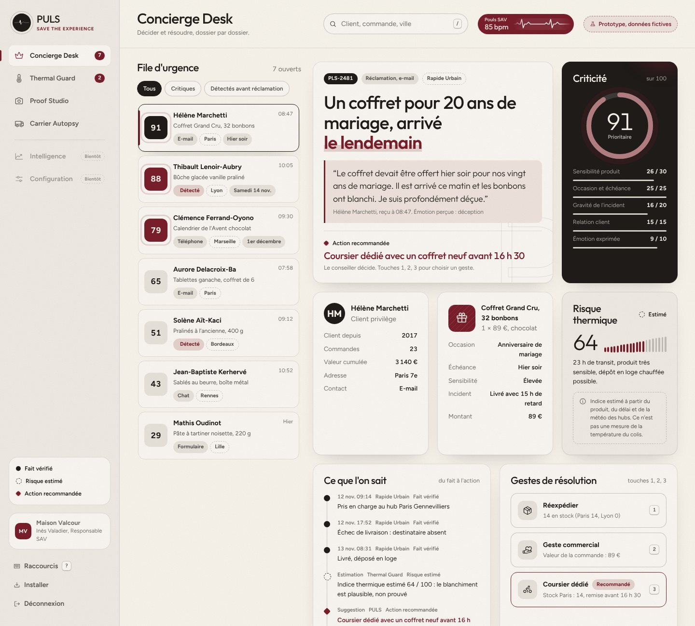

Une livraison ne devrait jamais détruire une expérience.
PULS anticipe les incidents, protège les produits sensibles et aide vos équipes à sauver chaque expérience client.

Ce que fait PULS
Il repère les livraisons à risque, explique chaque incident et propose la meilleure solution au conseiller.
Pour qui
Les maisons qui expédient des produits fragiles, périssables, thermosensibles ou de valeur.
Ce qui change
Un logiciel SAV attend la réclamation. PULS part de l'événement transporteur, souvent des heures avant.
Un coffret arrivé le lendemain d'un anniversaire n'est pas un retard. C'est un cadeau perdu.
Pour un produit sensible, l'incident commence bien avant le message du client. Voici la chronologie typique d'une livraison ratée.
Le colis quitte le hub. Rien d'anormal.
Échec de livraison : destinataire absent. Le transporteur l'enregistre.
Déposé en loge chauffée après 23 heures de transit. Le chocolat a probablement souffert.
La cliente écrit. Le dîner était la veille. Le SAV découvre le dossier.
Les outils traditionnels interviennent trop tard.
Un logiciel de ticketing
Commence à la réclamation
- Attend que le client écrive, souvent quand il est déjà trop tard.
- Traite un coffret de chocolats comme une boîte de biscuits.
- Laisse le conseiller deviner le stock, les délais et le coût du geste.
- Répond avec des modèles génériques, sans contexte d'occasion.
PULS
Commence à l'événement transporteur
- Détecte l'incident et prévient le client avant qu'il ne s'inquiète.
- Pondère chaque dossier par la sensibilité du produit et l'échéance.
- Compare les solutions possibles avec leur coût, leur délai et leur faisabilité.
- Prépare une réponse au ton de votre maison, relue par un conseiller.
Détecter les incidents avant les réclamations.
Évaluer les risques pour les produits fragiles, périssables ou thermosensibles.
Recommander et coordonner la meilleure solution.
Identifier les défaillances récurrentes et réduire les pertes.
Quatre moteurs, une seule décision à prendre.
Chaque moteur traite une partie du problème. Le conseiller garde la décision finale.
Comprendre et résoudre chaque incident.
File d'urgence, contexte client, chronologie transporteur, gestes de résolution et réponse préparée.
Estimer le risque avant la réclamation.
Sensibilité du produit, durée de transit, météo des hubs et événements transporteur, réunis dans un indice estimé.

Des preuves sans friction.
Un lien sécurisé, trois photos guidées depuis le smartphone du client, aucune application à installer.

Des transporteurs jugés sur des faits.
Incidents vérifiés, intervalles de confiance, aucune conclusion sans échantillon suffisant.

La bonne solution, au juste coût.
Chaque option est comparée sur le coût, le délai, le stock et l'autorisation requise.
Un même produit, configuré pour votre métier.
Catalogue, seuils, gestes, ton éditorial et règles de priorité se paramètrent par entreprise. Aucune application distincte par secteur.
Gastronomie et produits artisanaux
Chocolat, pâtisserie, glacerie : quelques degrés et quelques heures suffisent.
Produits frais et périssables
Une durée de conservation courte transforme chaque retard en perte.
Retail premium et luxe
Colis de valeur, clients attentifs, gestes à encadrer.
Mobilier et objets fragiles
La casse se règle en preuves, en réserves et en délais.
Cadeaux et fleuristes
La date ne se négocie pas, le destinataire n'est pas l'acheteur.
Ce que voit un conseiller, dossier ouvert.
Écran réel de PULS, avec des données fictives. Parcourez les quatre repères.

Branché sur vos outils, sans les remplacer.
PULS se connecte par adaptateurs : messagerie, e-commerce, ERP et OMS, CRM, transporteurs, stocks. Chaque connecteur affiche son véritable état d'avancement.
Vos données restent les vôtres.
Un espace isolé par entreprise, des autorisations par rôle, un journal des actions et des preuves en accès privé. L'IA prépare, un humain décide.
Voyons ensemble vos incidents de livraison.
Une démonstration de 45 minutes sur vos produits, vos transporteurs et vos règles. Sans engagement.